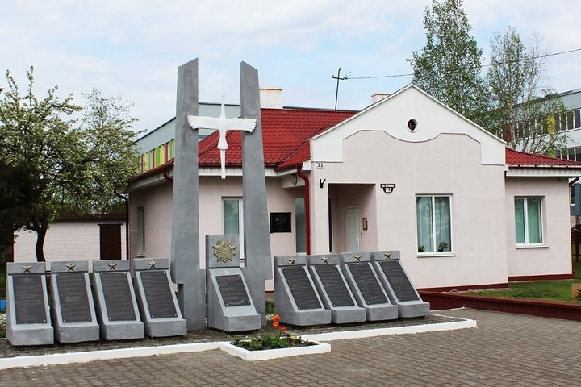
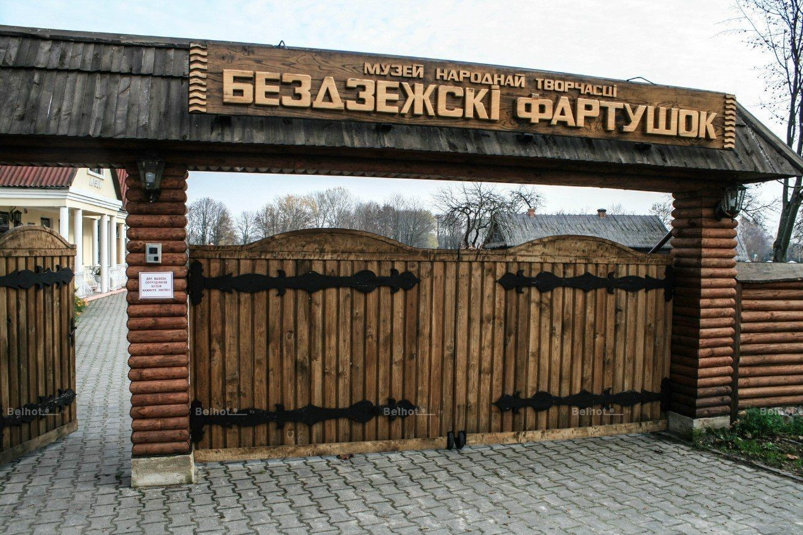
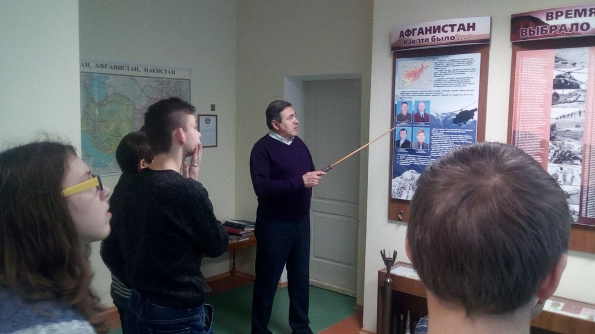

Дрогичинский край
Главная
История
Выдающиеся люди
Памятные места
Музеи
Это интересно

Военно-исторический музей им. Д.К. Удовикова
На настоящий момент, не смотря на небольшой штат специалистов — 3 человека, военно-исторический музей им. Д.К. Удовикова играет важную роль в культурно-просветительской деятельности района.
Подробнее

Бездежский фартушок
На настоящий момент музей народного творчества «Бездежский фартушок» является одним из самым популярных музеев Брестской области.
Подробнее

Комната-памяти воинов-интернационалистов Дрогичинского района
Руководитель музейной комнаты в настоящий момент является Волосюк Сергей Петрович.
Подробнее